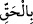
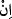

ashâbına anlatmıştı. Onlar da bu rüya vesilesiyle sevinmişler, o sene Mekke’ye
gireceklerini ümid etmişlerdi. Mekke’ye girişleri gecikince münâfıklardan bazıları: “Ne
saçımızı kısalttık, ne tamamen tıraş ettik, ne de Mescid-i Haram’ı gördük” demeye
başladılar. Bunun üzerine bu âyet-i kerîme nâzil oldu.
Bu durum, Bahru’l-ulûm’da geçtiği üzere, kelâm âlimlerinin çoğunluğunun ve
Mutezile kelamcılarının -yazıklar olsun onlara- rüyânın bâtıl olduğunu iddia etmelerine
karşılık, hak olduğunun kesin bir delilidir. Onlar şöyle söylemişlerdir: Rüya, kişinin
kalbini meşgul eden şeylerden değilse, aynı zamanda rüya görenin zihnî durumu iyi,
mizacı da sağlam ise, bu durumda rüya Allah’tandır. Peygamberlerin, velîlerin ve sâlih
kulların rüyaları böyledir. Hadis-i şerifte şöyle buyrulur: “Sâdık rüya peygamberliğin
kırk altı cüzünden bir cüzdür.”[141]
Âyetteki “doğru çıkardı” ifadesi, Allah’ın peygamberine gösterdiği rüyayı bu şekilde
tasdîkinin, gerçek bir hedef ve açık bir hikmet içerdiğini göstermektedir. Bu da îmânı
içine sindirmiş olanla, îmân kalbine tam olarak yerleşmemiş olanı birbirinden
ayırmaktır. Bir başka açıdan “=doğru, gerçek” ifadesi bu rüyanın karmakarışık
düşlerden olmadığını, hakkı ve hakikati içerdiğini gösterir. Nitekim O’nun (s.a.)
gördüğü bu rüya takdir edilen vaktinde gerçekleşmiştir ki bu da bir sonraki senedir.
Bu ifadenin, Cenâb-ı Allah’ın “Hak” ismine yapılan bir yemin veya bâtılın zıddı olan
“hak” anlamında kullanılmış olması da mümkündür.
“Allah dilerse... gireceksiniz”in mânâsı; “Allah’a yemin olsun ki bir yıl sonra
Mescid-i Haram’a mutlaka gireceksiniz” demektir.
Bu cümle içerisindeki “Allah dilerse” ifadesi, Cenâb-ı Allah’ın vaad ettiği şeyi, yine
O’nun dilemesine bağlamaktadır. Bu ifade aynı zamanda, kulların yapmayı planladıkları
şeyleri “inşaallah” diyerek Allah’ın dilemesine bağlamalarını öğretmek içindir. Yoksa -
hâşâ- Allah’ın ayette vaad edilen şeyi yapıp yapmama konusunda tereddüdlü olduğu
anlamına gelmez. Zira O, bundan münezzehtir.
Sa‘leb bu hususu şöyle izah eder: Allah Teâlâ, insanların gerçekleşip
gerçekleşmeyeceğini bilmedikleri hususlarda “inşaallah” demelerinin lüzumunu beyan
için, gerçekleşeceğini kesin olarak bildiği bir şeyde “inşaallah” tabirini kullanmıştır.
Burada ayrıca müslümanların Mekke’ye girmelerinin kendi güç ve kuvvetlerine değil,
Cenâb-ı Allah’ın dilemesine bağlı olduğuna işâret edilmektedir. Nitekim Kevâşî’de
hakikî anlamda Allah’tan başka fâil olmadığını bildirmek için âyette “inşaallah”
ifadesinin kullanıldığı belirtilir.
Âyette “inşaallah” cümlesi, müslümanlardan bir kısmının ölüm, kaybolma veya bir
başka sebeple Mekke’ye giremeyeceklerine işâret etmek için de kullanılmış olabilir.
Dolayısıyla buradaki “ =eğer” edatı hâşâ Cenâb-ı Allah’ın bu işin gerçekleşmesinden
şüphe duyduğunu değil, ferd ferd sahâbenin Mescid-i Haram’a girip girmemesinin
ihtimal dâhilinde olduğunu göstermek içindir.
Haddâdî şöyle der: “İnşaallah” cümlesi bazan “Allah senin günahlarını inşaallah